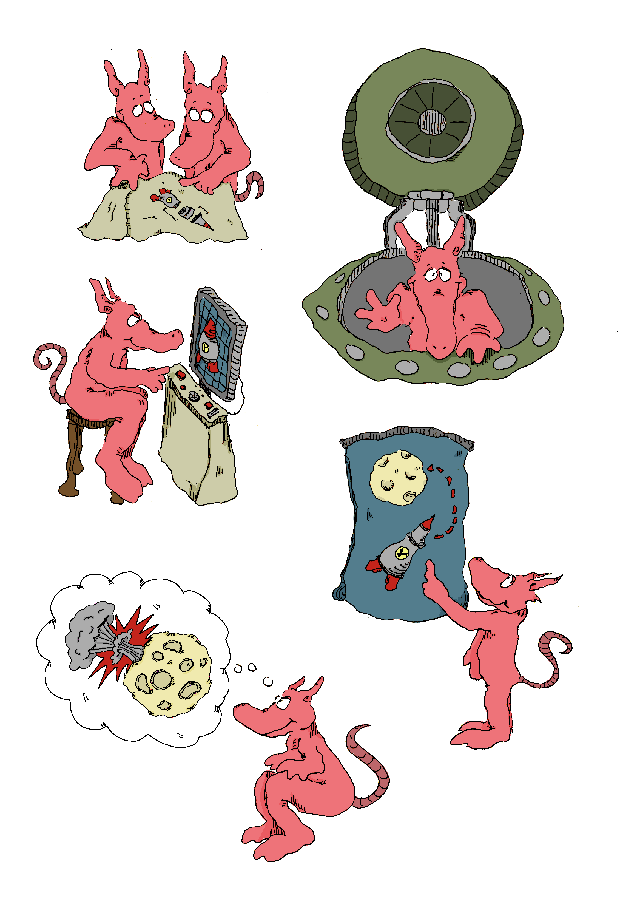
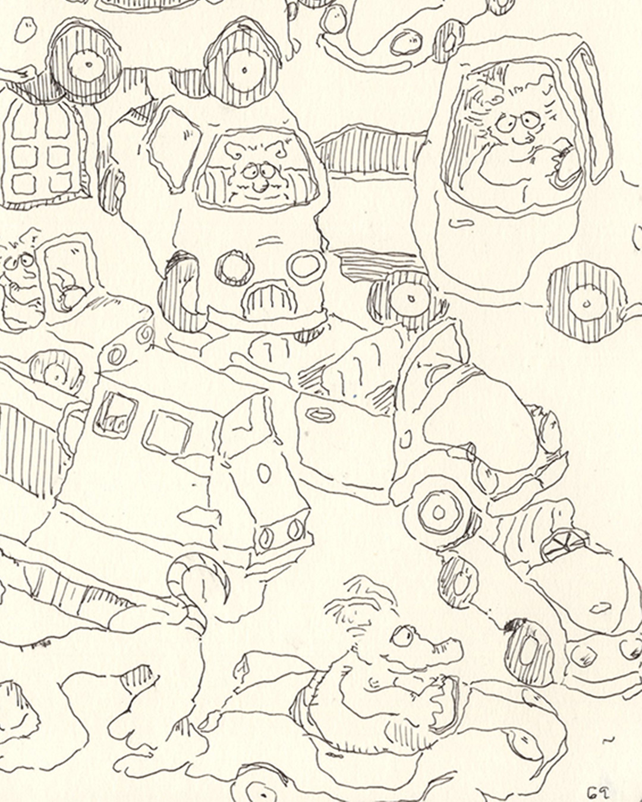
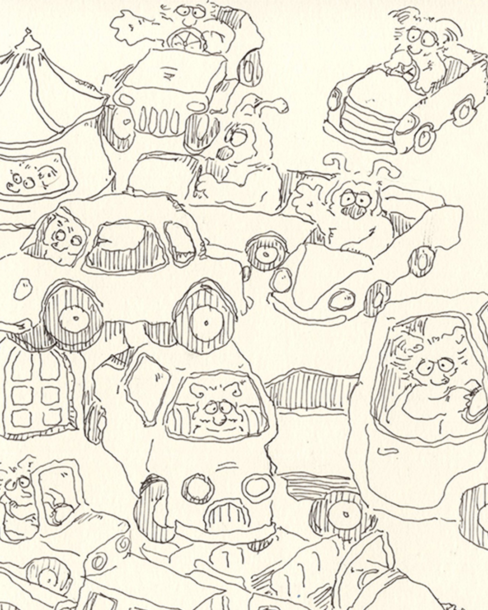
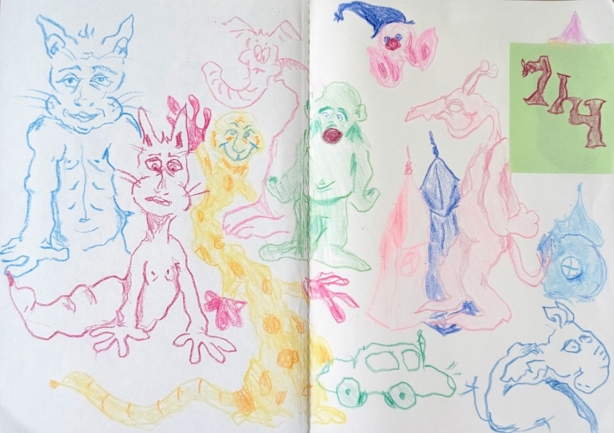
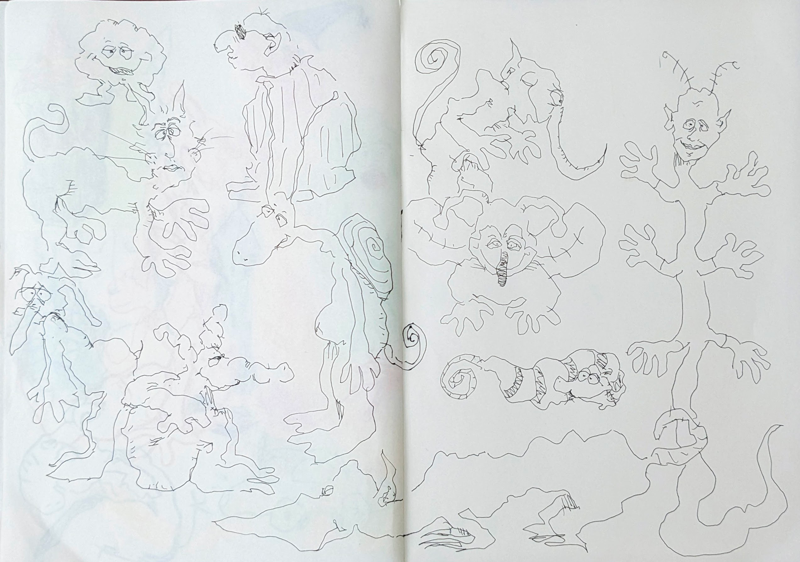

Towards the end of last week, I finished some drafts for V119 stickers, a pending comic project. I was very torn between drawing them digitally or traditionally. Going the traditional route is usually more tedious for me, especially if I have in mind that I'm working towards a final draft. I put myself through it regardless, since I typically like the character in the line work that shows through on paper. I can sometimes replicate this digitally by using aliased pens, the only downside is that I end up with very low res drafts. For the stickers, I ended up frankensteining a handful of traditional drawings together, cleaning the scans, then coloring them in Photoshop.

This project reminded me to spend more time working with loose leaf paper - I'm more likely to make final versions of my drawings if I can move them between transfer sheets. On top of that, I've realized that I'm getting tired of working with the cold press paper in my current sketchbook. Combined with a fountain pen, it adds a nice amount of texture and character to the lines but the actual experience of drawing on it isn't as enjoyable. I should be finishing up my sketchbook by the end of this month, so I'll try to opt for something smoother in August.
On Wednesday, I started to practice drawing some cars. I could not care less for cars but something about playing with the forms was good fun. These are mostly referenced from Richard Scarry's work.


My main focus throughout the week was this site, adding some new pages and fixing bugs. There's a research page now that integrates an are.na channel of mine. For now, its a collection of random graphics, objects, and illustrations that inspire my work. (Idea for this stolen from: https://kevinmccaughey.net/). My next objective is tweaking the layout for the projects page which is looking bland right now. I'm also running into walls with the mosaic layout not auto adjusting to newly added thumbnails... will investigate later.
Wrapping up: I'm starting a small kraft sketchbook to fill with drawings made by my non dominant hand. I saw a video earlier this week of someone doing this as a daily practice and felt that it would be fun to take on myself. It's forced me to slow down and be more deliberate, yet I feel less pressure than I do when drawing with my right hand since I expect the results to look terrible anyways. These are much easier to do in crayon, mostly because of how dull and wide the tips are. I think the results I got with my fountain pen are more interesting though. Here are a few pages:

